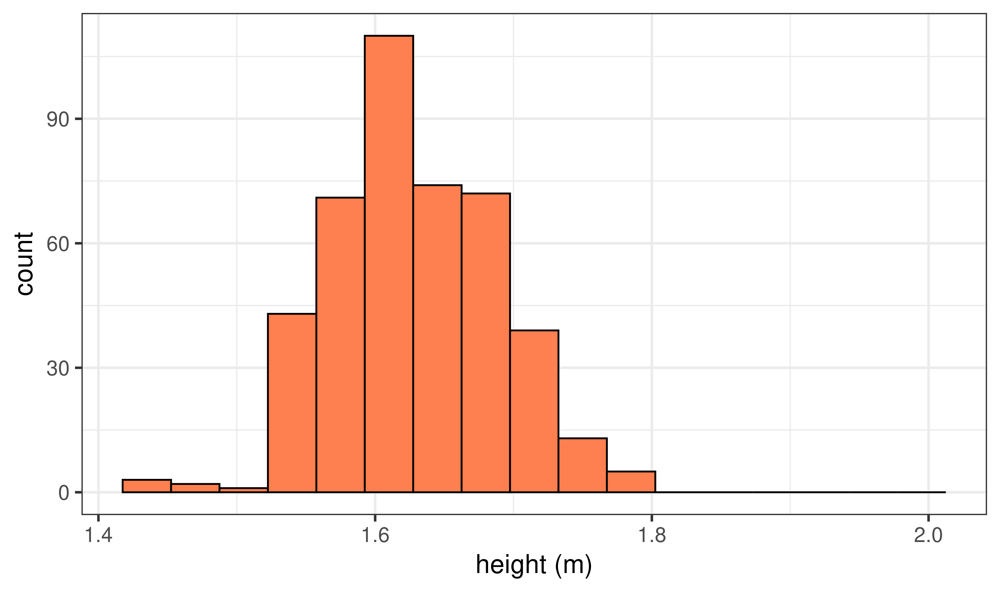
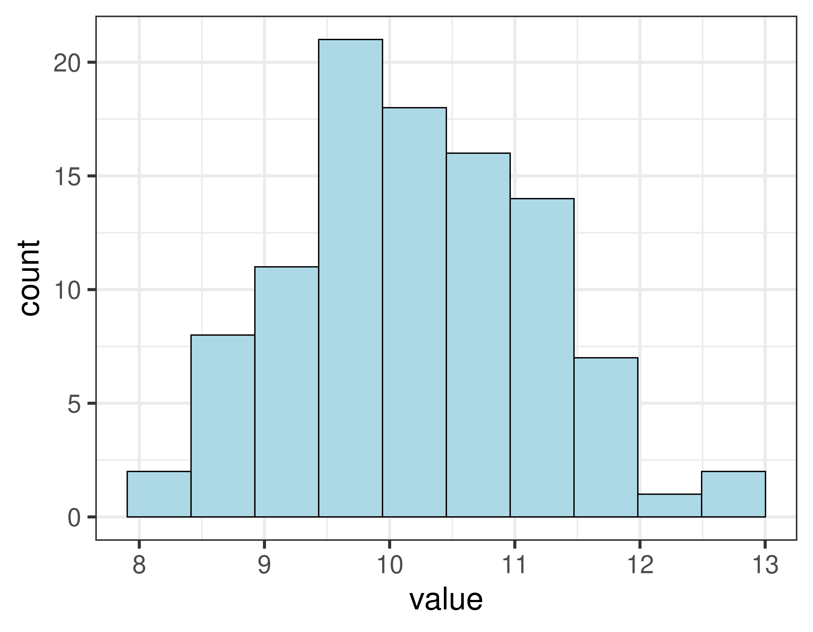
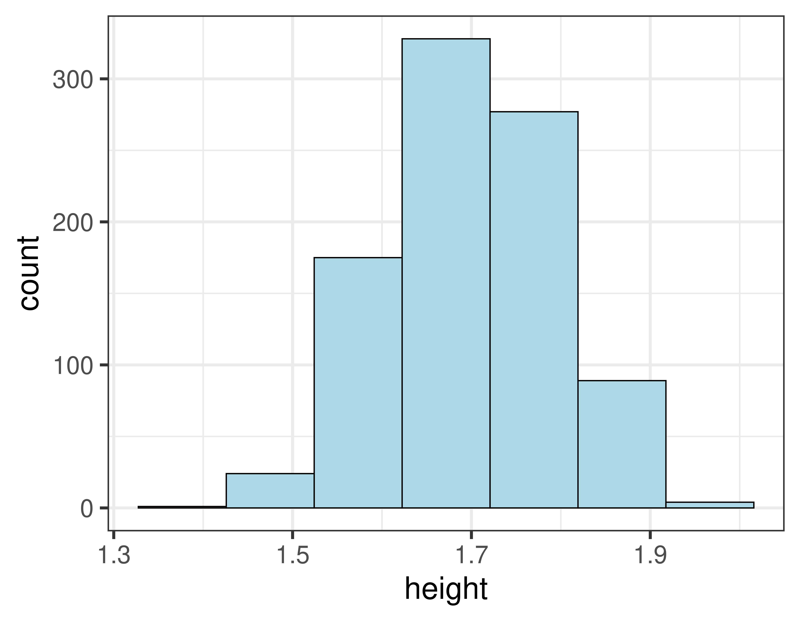
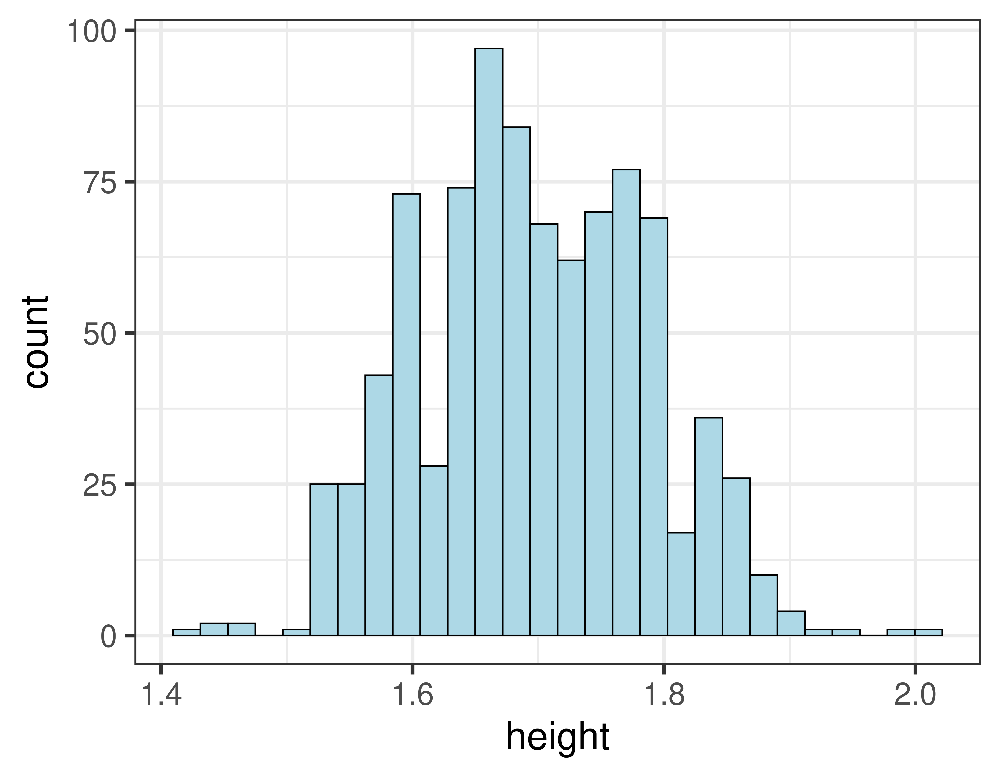
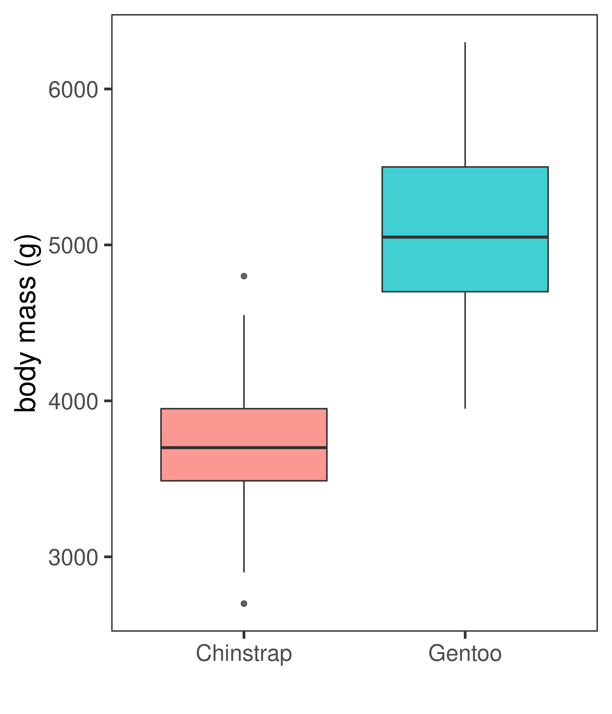
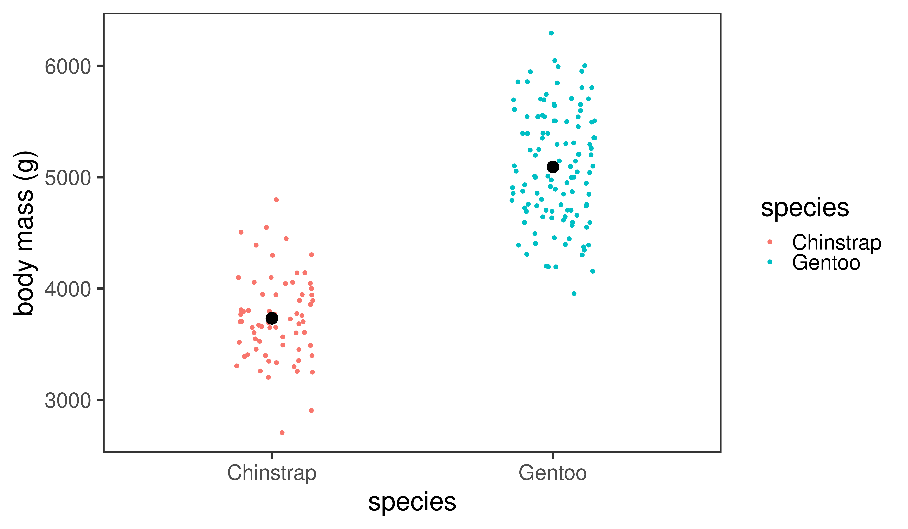
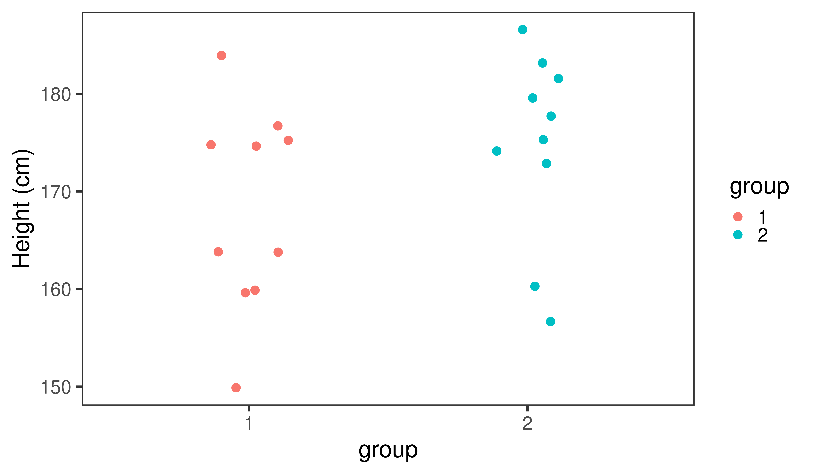
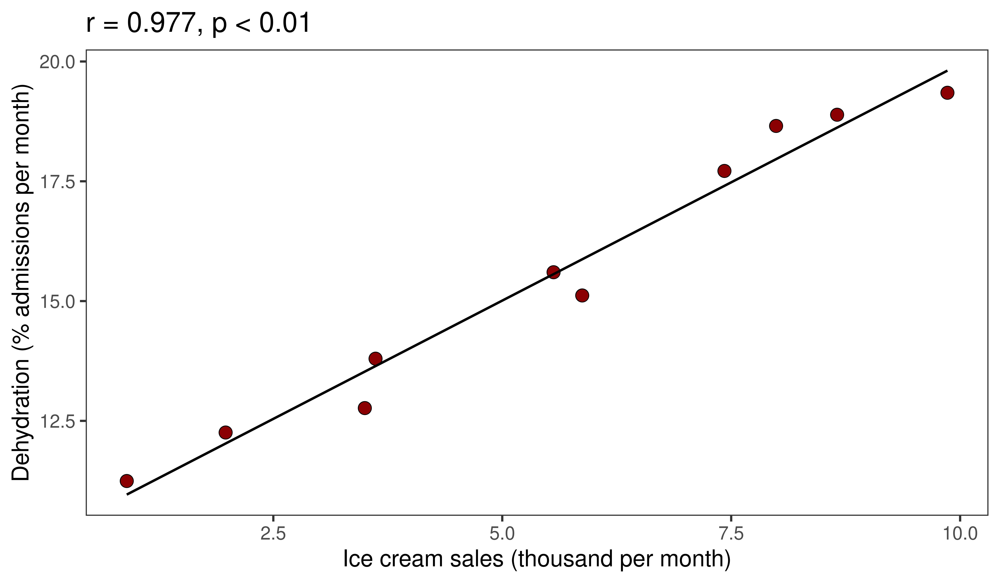

Making presentation slides in R
Coffee & R
Dr Axel Barlow
email: a.barlow@bangor.ac.uk
This presentation was generated in R
- Written in
Rmarkdown - Using
slidifyR package - Assemblage of multiple software packages (e.g.
knitr) - Nice features and (small) active online community
Rmarkdowncode is translated into html- Can be viewed in web browser (e.g. Google Chrome)
Slidify installation
First there were dancing graphs
R package gganimate

With a general hatred of Powerpoint
- Previously used open source
libreoffice impress - Or
inkscapevector image editor! - Difficult to include/edit high quality graphics
- No time reduction of repetitive tasks
- Making high quality/consistent slides challenging
- Animations difficult to impossible
Beamerpackage fromLatexwas an option, but difficult to integrate RRmarkdownseemed to tick all the boxes
A tour of features
Github hosting and access
YAML front matter
---
title : "Making presentation slides in R"
subtitle : "Coffee & R"
author : Dr Axel Barlow
job : "email: a.barlow@bangor.ac.uk"
framework : io2012 # {io2012, html5slides, shower, dzslides, ...}
highlighter : highlight.js # {highlight.js, prettify, highlight}
hitheme : zenburn # {zenburn, tomorrow, solarized-dark, ...}
widgets : [] # {mathjax, quiz, bootstrap}
mode : selfcontained # {selfcontained, standalone, draft}
knit : slidify::knit2slides
logo : LA_Full_colour_reversed.svg
biglogo : A1_FullColour.svg
assets : {assets: ../../assets}
license : by-nc-sa
github:
user: draxelbarlow
repo: Ax_slidify_eg_bangor
branch: "gh-pages"
---
Slide formatting
Header 2
- list1
- list2
- Numbered list1
- Numbered list2
Appear on click
bold
italic
inline code
Code
--- .class #id
## Slide formatting
### Header 2
- list1
- list2
1. Numbered list1
2. Numbered list2
>- Appear on click
>- **bold**
>- *italic*
>- `inline code`
Two column layout
Here's an alternative layout
- list1
- list2
- list3
- list4
- list5
- list6
- list7
- list8

Random frog picture
Code
--- &twocol
## Two column layout
#*** =left
#*** =right
Tables
|Subject|Emotion|Object|
|----|----|----|
|I|hate|Powerpoint|
|I|love|Rmarkdown|
| Subject | Emotion | Object |
|---|---|---|
| I | hate | Powerpoint |
| I | love | Rmarkdown |
Or for dataframes or tibbles...
my.dataframe
## Subject Emotion Object
## 1 I hate Powerpoint
## 2 I love Rmarkdown
kable(my.dataframe)
| Subject | Emotion | Object |
|---|---|---|
| I | hate | Powerpoint |
| I | love | Rmarkdown |
Code chunks
```<language, echo=TRUE/FALSE, eval=TRUE/FALSE, other stuff>
... code
```
R code
print("this is R code")
## [1] "this is R code"
bash
echo "this is bash"
## this is bash
Plots
- The plot is generated within an R code chunk and plotted to the slide

Code
This is what the R chunk looks like
#```{r, out.width = "65%", out.height = "65%", fig.width = 9, fig.height = 7,
#dpi = 600, fig.align = "center", echo = FALSE}
my.dat <- rnorm(100, 10, 1)
my.df <- enframe(my.dat)
plot <- ggplot(my.df) +
geom_histogram(aes(x = value), colour="black", fill="lightblue", bins = 10) +
theme_bw(base_size = 25)
plot
#```
Images

Code
#```{r, out.width = "45%", dpi = 300, echo = FALSE, fig.align='center'}
include_graphics("./assets/img/smilodon1.png")
#```
Complex images

Code
#```{r, out.width = "60%", dpi = 300, echo = FALSE, fig.align='center'}
include_graphics("./assets/img/aDNA_seq.svg")
#```
Embedding websites
Code
<iframe src = 'https://pleistocenegenomics.com' height='600px'></iframe>
Embedding pdfs
Code
#```{r, out.width = "100%", out.height=500, dpi = 300, echo = FALSE}
include_graphics("./assets/img/Paijmans et al. - 2017.pdf")
#```
Has it helped? [note segue layout]
Histogram example
- Heights of 898 people, in metres
## height
## 1 1.86
## 2 1.76
## 3 1.75
## 4 1.75
## 5 1.87
## 6 1.84
## 7 1.66
## 8 1.66
## 9 1.80
## 10 1.73
## 11 1.79
## 12 1.74
## 13 1.70
- Binned data
## start finish counts
## 1 1.40 1.45 3
## 2 1.45 1.50 3
## 3 1.50 1.55 44
## 4 1.55 1.60 122
## 5 1.60 1.65 163
## 6 1.65 1.70 171
## 7 1.70 1.75 149
## 8 1.75 1.80 146
## 9 1.80 1.85 76
## 10 1.85 1.90 13
## 11 1.90 1.95 6
## 12 1.95 2.00 1
## 13 2.00 2.05 1
Histogram example
- Using 14 bins

Effect of bin size
- Using 7 bins

Effect of bin size
- Using 28 bins

Penguins
Penguins
- Body mass: quantitative continuous
- Species: categorical

Chinstrap penguin

Gentoo penguin
Data visualisation

Box plot
- Also know as a box and whisker plot
- The box shows:
- Median (50th percentile)
- lower quartile (25th percentile)
- upper quartile (75th percentile)
- Note upper - lower quartile is the interquartile range
- Whiskers extend to the furthest data point within 1.5 x the interquartile range
- Anything outside this range is an outlier

Barchart
- Species goes on the x axis
- Mean body mass on the y axis
- Error bars often used to display the sample variation
- +/- one standard deviation in this example

Showing the data points

Sample sizes
A simple example:
- There are two student groups, you hypothesise that one is taller than the other
- Height is a normally distributed continuous quantitative variable
- Null hypothesis: there is no difference in (the distribution of) height between the two groups
- Alternate hypothesis: there is a difference
- You measure 10 students from each group and compare...
Comparison 1

Comparison 2

Comparison 3

Comparison 4

So are the groups different?
All the groups are sampled from the same normal distribution
group1 <- rnorm(10, 170, 10)
group2 <- rnorm(10, 170, 10)
group1
## [1] 160.8895 153.7914 176.8832 164.1606 180.4169 159.9684 176.8528 174.3741
## [9] 171.9017 147.9585
group2
## [1] 192.9088 162.6418 156.1617 175.3498 171.3170 184.2103 181.3498 178.3536
## [9] 176.7788 175.4640
Now let's increase the sample size
Comparison 1

Comparison 2

Comparison 3

Comparison 4

Using other people's code
r shows the strength of correlation

R code for plot by Denis Boigelot
Ice cream
Eating ice cream does not cause dehydration

ice_cream <- data.frame(icecream=jitter(1:10, factor=3), cancer=jitter(11:20, factor=5))
Thank you
Now a look "behind the scenes"